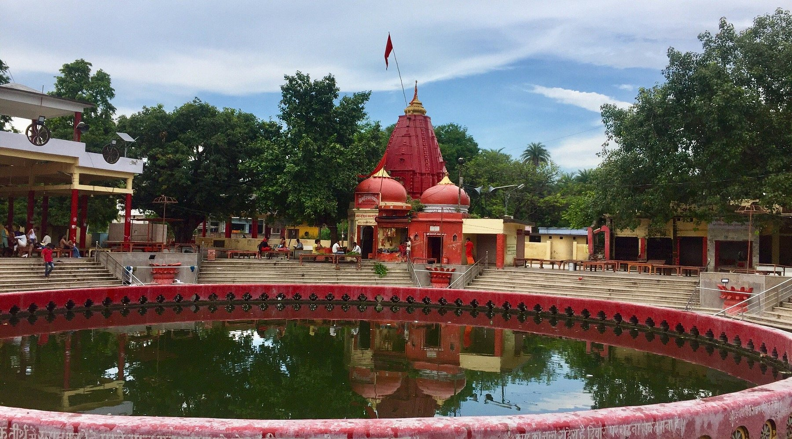

अधिष्ठात्र देव

1. चक्रतीर्थ (Chakra Tirtha)
ब्रह्ममनोमय चक्र का उद्गम स्थल
यह नैमिषारण्य तीर्थ के अधिष्ठात्र देव हैं। यहीं पर ब्रह्मा जी का ब्रह्ममनोमय चक्र पृथ्वी पर प्राप्त हुआ था। वहीं भगवान विष्णु द्वारा निमिष मात्र समय में दुर्जय नाम के राक्षस का वध किए जाने के कारण निमिष और अरण्य के रूप में नैमिषारण्य तीर्थ की सर्वोच्च मान्यता है।